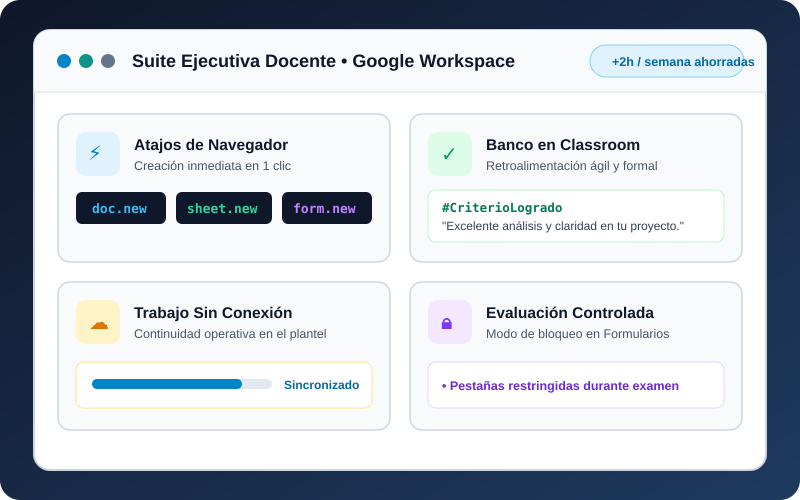

Lista de Videos • Gmail y Herramientas Google
Gmail y Productividad en Google Workspace
Serie introductoria vinculada al curso para organizar el correo institucional, etiquetas, filtros y comunicación escolar efectiva.
Estrategias prácticas para optimizar el trabajo en el aula (Primaria y Secundaria) bajo la Nueva Escuela Mexicana.

Orientaciones sintetizadas con acciones directas para maestros frente a grupo en Primaria y Secundaria Técnica.
Gestión del Aula & Tareas
Almacenamiento y Respaldos
Planeación y Presentaciones
Evaluación Formativa y Diagnóstico
Sincronización y Comunicación Escolar

Pequeñas configuraciones prácticas que ahorran hasta 2 horas semanales en el trabajo docente.
Escribe doc.new, sheet.new o form.new para crear un archivo nuevo en 1 segundo.
Guarda observaciones frecuentes en Classroom y reutilízalas al calificar usando #palabraClave.
Permite seguir redactando planeaciones y registrando notas aún con intermitencias en la red del plantel.
Evita la apertura de pestañas secundarias en evaluaciones diagnósticas con computadoras escolares.
Rúbricas listas en Google Sheets, formatos editables para Programa Analítico y bitácoras de seguimiento escolar para primaria y secundaria.
Potencia tus herramientas de Google con prompts didácticos, asistentes inteligentes y generadores de proyectos comunitarios para Aguascalientes.
Materiales audiovisuales vinculados del curso original para docentes y alumnos. Reproduce cada ejercicio directamente en el portal o amplía el reproductor.
Serie introductoria vinculada al curso para organizar el correo institucional, etiquetas, filtros y comunicación escolar efectiva.
Dos canales educativos destacados en español con tutoriales gratuitos de Google Drive, Docs, Hojas de Cálculo y Classroom para docentes y estudiantes.
Video muestra: Curso de Google Drive — Aplicaciones y extensiones
Reseña: Canal pionero en formación informática gratuita en español. Destaca por sus cursos estructurados y explicaciones claras de Google Drive, Documentos y herramientas de productividad escolar.
© Derechos de autor: Contenido original de aulaClic (@aulaclic) en YouTube.
Video muestra: Curso Google Sheets — Trabajar sin conexión
Reseña: Canal especializado en entornos Google Workspace for Education, Classroom, Hojas de Cálculo y Formularios, orientado a optimizar el trabajo diario de profesores y alumnos en línea y sin conexión.
© Derechos de autor: Contenido original de Aula en la nube (@aulaenlanube) en YouTube.